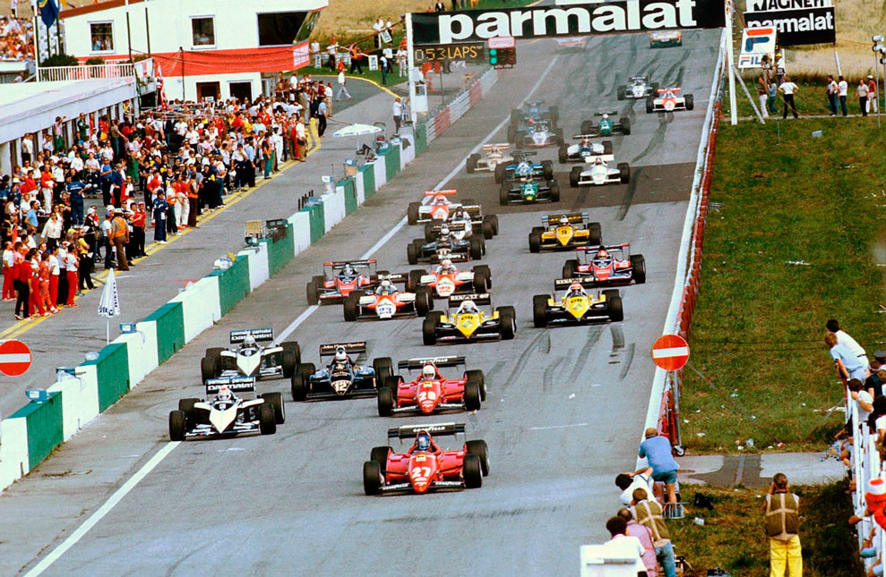

UMA FÁCIL VITÓRIA

Na Alemanha, René Amoux esteve perfeito e levou a nova Ferrari 126 C/3 a uma fantástica exibição. Mas já existe uma quase certeza: em 1984 ele volta para a Renault… se esta não abandonar as pistas, como se afirma.
Revista Autosport
A vitória de René Arnoux no Grande Prêmio da Alemanha, disputado no veloz circuito de Hockenheim, teve um sabor todo especial para o pequeno piloto francês. Afinal, já há algum tempo fervilham comentários a respeito de uma crescente insatisfação da Ferrari com suas atuações, apesar de toda a competitividade do atual modelo 126 C/3. E na atual temporada de especulações sobre as transferências de pilotos para o próximo ano, que se acelera à medida que o campeonato de 1983 se encaminha para o final, até as mais descabidas das hipóteses envolvendo os novos integrantes da equipe italiana para 1984 têm sido formuladas. E elas, invariavelmente, não reservam uma vaga para Arnoux.
A resposta de Arnoux aos críticos não poderia ser mais contundente. Além de conseguir a sua segunda vitória no atual calendário, ele colocava a Ferrari novamente na liderança do Mundial de Construtores. E o resultado foi apenas consequência de uma corrida perfeita, em que assumiu a liderança na décima volta — sobre seu companheiro de equipe. Patrick Tambay — e recebeu a bandeirada a mais de um minuto e dez segundos de vantagem sobre Andrea de Cesaris. Mais importante: com os nove pontos conquistados, ele retornaria ao seleto quarteto — completado por Prost. Piquet e Tambay — em condições de aspirar ao título.

Tambay-Arnoux, primeira fila
Para se ter uma idéia da facilidade com que os dois pilotos da Ferrari conquistaram a primeira fila, basta lembrar que Tambay, o pole, foi um segundo e meio mais rápido que o italiano Andrea de Cesaris, que de modo relativamente surpreendente alcançava o terceiro lugar no grid. Esses tempos, aliás, foram obtidos na sessão oficial de sexta-feira. No sábado choveu forte em Hockenheim e as marcas não melhoraram. Com a perspectiva da manutenção do mau tempo, houve até quem transferisse o favoritismo de Tambay e Arnoux para Prost, Piquet e até mesmo Eddie Cheever. É que, pelo menos até agora, os pneus Michelin que equipam os carros da Renault e Brabham têm superado o Goodyear da Ferrari em pistas molhadas. Mas, mesmo com o piso nessas condições, ninguém- andou mais rápido que Tambay e Arnoux, o que em princípio anulava essa tese. De qualquer forma, ninguém quis arriscar-se muito. Afinal, no mesmo circuito e também sob chuva, Didier Pironi acidentou-se gravemente e não pôde retornar às pistas até hoje. E o acidente ainda está suficientemente vivo na memória de todos.
No dia anterior, com o tempo bom dominando a região, Raul Boesel perdeu o controle do Ligier em uma das curvas e bateu violentamente contra uma parede de concreto. Apesar de destruir completamente o carro, e contabilizar um pequeno corte no pescoço, ele garantiu sua inclusão entre os 26 que largariam, ainda que na última fila. Os reflexos da batida, contudo, refletiriam uma semana após, na Áustria, quando Boesel, pela primeira vez este ano, não se classificou para o GP da Áustria.
De resto, os treinamentos oficiais novamente confirmaram a superioridade dos motores turbocomprimidos na atual temporada, especialmente na segunda metade do ano — composta quase que totalmente por circuitos de altas médias de velocidades. E, mais uma vez, o motor Ford Cosworth melhor alinhado partiria da 12? posição: o do Williams do atual campeão Keke Rosberg. Praticamente sete segundos mais lento que o pole.
Na verdade, Arnoux só encontrou problemas nas dez primeiras voltas e nos momentos finais da corrida. De início, foi Patrick Tambay quem largou bem e liderou até à 10ª volta. E, próximo à bandeirada, um ameaçador Nélson Piquet pressionou muito, até que o turbocompressor do Brabham se incendiou e o brasileiro foi obrigado a abandonar. Mas foi só. Depois que assumiu a liderança. Arnoux manteve a corrida sempre a seu modo. Até o instante em que entrou nos boxes para efetuar a troca de pneus e reabastecer o carro, ele praticamente não sofreu qualquer problema. É verdade que Piquet aproveitou bem a oportunidade, retardando ao máximo o pit-stop. mas Arnoux sabia que a vantagem acumulada até à metade da prova seria mais do que suficiente para reassumir a liderança ao retornar à pista. E assim foi.

Aliás, ao criar a tática do reabastecimento durante a corrida, a Brabham certamente nem desconfiava que, além de usufruir das vantagens de largar com os tanques pela metade e pneus de compostos mais macios, estaria contribuindo também para aumentar a emoção na Fórmula 1. Afinal, as principais equipes — ou melhor, quase todas — já utilizam a mesma estratégia e o tempo empregado para as operações é atentamente acompanhado pelos espectadores, enquanto provoca inúmeras alternativas em termos de classificação, E na Alemanha não foi diferente. Ao sair dos boxes, Piquet voltou atrás de Arnoux, seguido por um valente Eddie Cheever, que não encontrou maior sorte e abandonou na altura da 40?ª volta. As atenções se voltaram, naturalmente, para a persistência de Nélson Piquet, que tentava de todas as formas aproximar-se de Arnoux. Para o brasileiro, a vitória era importantíssima, já que o atual líder do campeonato, Alain Prost, prosseguia em quinto lugar sem que o Renault RE40 desse provas de maior competitividade.
Mas, quando restavam apenas três voltas, aconteceu. Aquele carro que, aos poucos, se tornava presa das chamas era mesmo o Brabham de Nélson Piquet. A princípio, ele nem percebeu o fogo. Quando se deu conta, saltou rapidamente ao sentir o forte calor e ficou desolado acompanhando o trabalho dos bombeiros. Para ele, o campeonato pode ter escapado das mãos nesse instante. Piquet, e nem poderia ser diferente, confessou: “É realmente muito azar. Estou completamente deprimido e não encontro palavras para explicar o que aconteceu”. Para o então preocupado Arnoux tudo ficou mais fácil. E ele recebeu a bandeirada sem saber que o segundo colocado, Andrea de Cesaris, estava a mais de um minuto de distância. E os demais também chegaram bem distantes entre si: Patrese, o terceiro, Prost, em quarto, Lauda, em quinto, e Watson, o sexto.
A classificação oficial, porém, seria outra. Acontece que a Williams protestou contra o auxílio recebido por Lauda no reabastecimento (os mecânicos empurraram o carro) e o piloto acabou desclassificado. Watson subiu, então, para o quinto lugar e Laffite ganhou uma posição, marcando um ponto com o sexto lugar. Era a vingança da Williams: no GP do Brasil, Rosberg foi desclassificado graças a um protesto da McLaren. A vingança estava consumada.